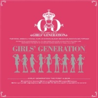
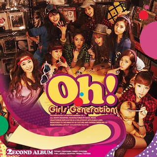
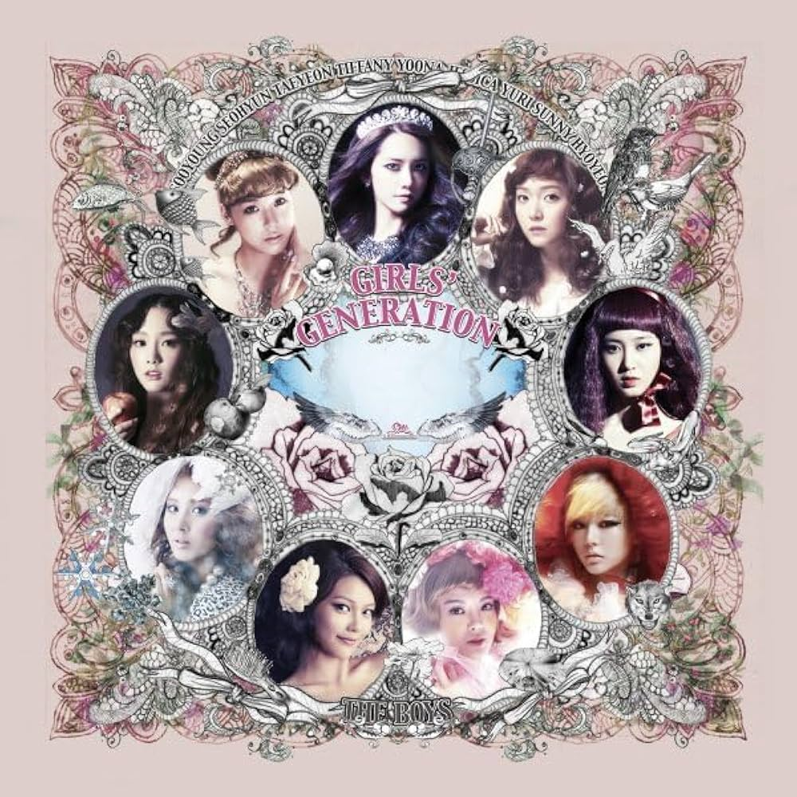
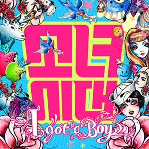
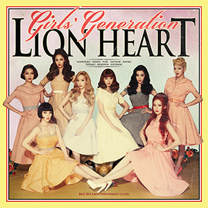
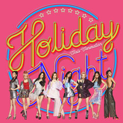
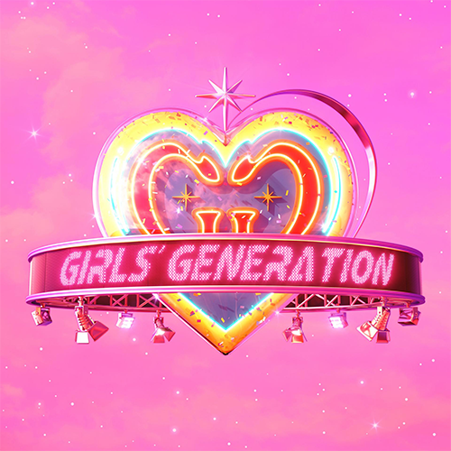

Girls' Generation
Álbum de estreia autointitulado do girl group sul coreano Girls' Generation, lançado pela SM Entertainment em 1° de novembro de 2007. Gravado em coreano com poucos trechos em inglês, Girls' Generation é um álbum pop com influências bubblegum pop.

Oh!
Oh! é o segundo álbum de estúdio do girl group sul-coreano Girls' Generation. Foi lançado em 28 de janeiro de 2010 na Coreia. Ele apresenta o single principal "Oh!". O álbum foi relançado em março de 2010, e "Run Devil Run" tornou-se o segundo single do álbum.

The Boys
The Boys é o terceiro álbum de estúdio em coreano do grupo feminino sul-coreano Girls' Generation. O disco contou com a contribuição do anterior colaborador do grupo, Hitchhiker, que produziu as faixas "Telepathy" e "Sunflower". A faixa-título foi o resultado de experiências com novos produtores, incluindo o produtor norte-americano vencedor do Grammy, Teddy Riley. Musicalmente, The Boys contém principalmente faixas dance-pop e, ocasionalmente, baladas de empoderamento.

I Got a Boy
I Got a Boy é o quarto álbum de estúdio em coreano (sexto no geral) do grupo feminino sul-coreano Girls' Generation. Foi lançado para download digital em 1º de janeiro de 2013 pela SM Entertainment e foi disponibilizado nos formatos físicos no dia seguinte pela KT Music. Musicalmente, o álbum é caracterizado por combinar elementos de uma vasta gama de gêneros musicais, incluindo R&B, new wave e EDM.

Lion Heart
Lion Heart é o quinto álbum de estúdio em coreano (oitavo no geral) do grupo feminino sul-coreano Girls' Generation. Produzido por Lee Soo-man, Lion Heart musicalmente abrange estilos de electropop e bubblegum pop. Foi lançado em duas partes ao longo dos dias 18 e 19 de agosto de 2015 pela SM Entertainment; outra versão com uma arte de capa diferente, intitulada You Think, foi distribuída em 26 de agosto de 2015.

Holiday Night
Holiday Night é o sexto álbum de estúdio coreano do grupo feminino Girls' Generation. Ele foi lançado digitalmente em 4 de agosto de 2017 e fisicamente em 7 de agosto pela S.M. Entertainment sob distribuição da Genie Music. Marcando o décimo ano de atividade do grupo, é composto em dez faixas, incluindo os singles "All Night" e "Holiday".

Forever 1
Forever 1 é o sétimo álbum de estúdio coreano (décimo no geral) do grupo feminino sul-coreano Girls' Generation, programado para lançar digitalmente em 5 de agosto, e fisicamente em 8 de agosto de 2022 pela SM Entertainment sob distribuição da Dreamus. O álbum consiste em 10 faixas, incluindo a faixa-título, lançada juntamente ao álbum, marcando o primeiro lançamento do grupo em cinco anos, depois de seu último trabalho, Holiday Night (2017).
LISTEN TO MY WORLD
| Plataforma | Link | |
|---|---|---|
| Youtube | SOSHI CHANNEL | |
| Spotify | SOSHIFY | |
| Apple Music | SOSHIPPLE MUSIC |